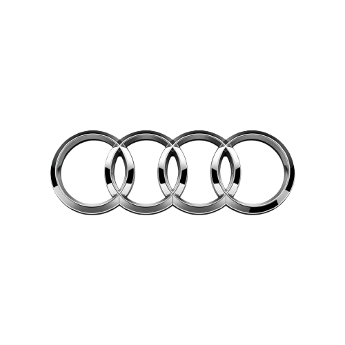

AUDI TECHNOLOGY
| quattro | All-Wheel Drive System |
| Virtual Cockpit | Digital Instrument Cluster |
| MMI Navigation | Advanced Infotainment Interface |
| Drive Select | Adaptive Driving Modes |
| Matrix LED | Smart Headlight Technology |
أودي تجمع بين الفخامة والتكنولوجيا الحديثة، لتقديم تجربة قيادة مريحة ومبتكرة مع أداء قوي على الطرقات المختلفة.
❝ PROGRESS THROUGH TECHNOLOGY ❞